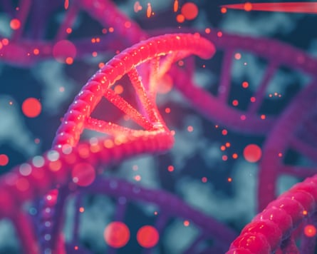

Researchers are embarking on an ambitious project to construct human genetic material from scratch to learn more about how DNA works and pave the way for the next generation of medical therapies.
Scientists on the Synthetic Human Genome (SynHG) project will spend the next five years developing the tools and knowhow to build long sections of human genetic code in the lab. These will be inserted into living cells to understand how the code operates.
Armed with the insights, scientists hope to devise radical new therapies for the treatment of diseases. Among the possibilities are living cells that are resistant to immune attack or particular viruses, which could be transplanted into patients with autoimmune diseases or with liver damage from chronic viral infections.
“The information gained from synthesising human genomes may be directly useful in generating treatments for almost any disease,” said Prof Jason Chin, who is leading the project at the MRC’s Laboratory of Molecular Biology (LMB) in Cambridge.
Scientists have been able to read DNA for decades. The first draft of the human genome was announced 25 years ago , a feat that set the stage for the ongoing genetics revolution. But while the technology for reading genomes has progressed rapidly, writing them has proved more difficult.
For the SynHG project, researchers will start by making sections of a human chromosome and testing them in human skin cells. The project involves teams from the universities of Cambridge, Kent, Manchester, Oxford and Imperial College London.
Chin’s team recently synthesised the complete genome of the E coli bacterium. But while the bug’s genome carries about 4.5m base pairs, represented by the letters G, T, C and A, the human genome holds more than 3bn base pairs.
“If you think about the human genome, it’s more than just a set of genes on a string,” said Dr Julian Sale, a group leader at the LMB. “There’s an awful lot of the genome, sometimes called the dark matter of the genome, that we don’t know what it does. The idea is that if you can build genomes successfully, you can fully understand them.”
‘If you think about the human genome, it’s more than just a set of genes on a string,’ said Dr Julian Sale, of the Laboratory of Molecular Biology.Photograph: Iliescu Catalin/Alamy
Embedded in the project is a parallel research effort into the social and ethical issues that arise from making genomes in the laboratory, led by Prof Joy Zhang at the University of Kent. “We’re a little way off having anything tangible that can be used as a therapy, but this is the time to start the discussion on what we want to see and what we don’t want to see,” Sale said.
Prof Iain Brassington, who studies the ethics of genetic technology at the University of Manchester, welcomed the project. While real-world applications are some way off, he said the work could lead to synthetic versions of mitochondria, the tiny battery-like structures that power biological cells. These could be used to prevent women who carry mitochondrial diseases from passing them on to their children. “The would-be mother would still need to undergo egg harvesting and IVF, but we’d no longer need a donor, so we’d halve the number of women burdened by the procedure,” he said.
But the technology did pose problems, Brassington added. It might be possible to make bacteria that – thanks to their synthetic genomes – can digest petrochemicals, which could be useful for breaking down plastic waste and clearing up oil spills but would need to be handled extremely carefully. “Such bugs getting into the environment could be catastrophic,” he said.
The spectre of designer babies is another valid concern. Parents could potentially use the technology to shape their children before birth, raising questions over how much control they should have. In another “slightly wild” idea, Brassington said celebrities might even start “licensing” parts of their genome to allow people to copy their genes.
“There might also be situations in which a man discovers that he is the ‘genetic’ parent of a child of whom he knew nothing,” Brassington added. “This could already happen, of course, but he would currently know how it happened. SynDNA enables us to imagine a situation in which a replica of someone’s DNA could be used to father a child with no cellular contribution from him at all.”
However, he said: “Generally, I think the concerns about designer babies all rely on some fairly far-fetched technology. I’m not going to lose too much sleep over them.”